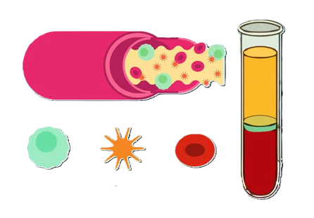

Il sangue è un tessuto connettivo liquido che circola nel nostro corpo attraverso i vasi sanguigni. E' formato per il circa 55% da una parte liquida chiamata plasma (liquido giallo paglierino formato soprattutto da acqua e sostanze nutritive) e per il restante 45% da una parte corpuscolata formata dai globuli rossi, globuli bianchi e le piastrine.

Globuli
Bianchi
Piastrine
Globuli
Rossi
La funzioni principali del sangue sono:
- distribuzione di nutrienti e di ossigeno alle cellule;
- prelievo di sostanze non più utili all'organismo e trasporto agli organi deputati alla loro eliminazione;
- trasporto di sostanze importanti, come gli ormoni, gli anticorpi ed altre sostanze.